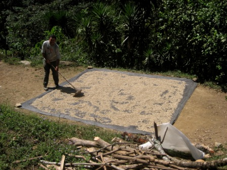
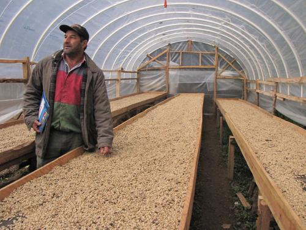
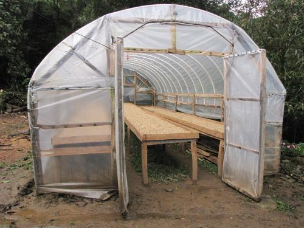

Velasquez Family News

©2007 Velasquez Family Coffee


Sun Dried
Visit a coffee producing country during harvest season (November - March in Central America) and you'll see coffee spread out drying in the sun on every possible surface -- including at times some roadways. Coffee berries are picked, the berry part is removed, the seed part is washed and fermented for a day and then -- if it isn't immediately sold wet -- it needs to be dried. (See our flickr slideshow for photos of this whole process.)
Many coffee farmers, including Guillermo's family, have a cement patio where they spread coffee to dry in the sun. At night, the coffee is collected into sacks and stored inside in case it rains. The next day, if the sun is shining, it is spread out again. Depending on how sunny it is, this process is repeated for several days until the coffee is dried thoroughly. Unfortunately, in the mountains, the coffee harvest coincides with the rainy season, making the process of drying coffee a real challenge. Some farmers simply sell their coffee wet as quickly as they can, taking a reduction in price in exchange for the convenience of not needing to dry their coffee. Others have patios (or rent patio space) down in the valley where the sun shines more consistently. Large exporters purchase dryers to mechanically dry coffee quickly.


In the area where our family farms, a new approach to drying coffee is taking hold. The coffee producers association that Guillermo's brother Sabel works for has been giving grants to farmers to build green houses and drying serandas out of fairly simple materials -- plastic tubes, large sheets of plastic, wood (usually gleened from the forest) and screens (like you'd find in a screen door). The plastic is stretched over the tubes in a "hoop house" type of green house that keeps rain away from the coffee and holds in heat. The screens, set in large wooden tables, allow the coffee to dry more quickly on top and on the bottom. When the coffee harvest is done, the green houses can be used to grow vegetables, coffee seedlings and even provide a great place to dry clothes. Guillermo's brothers now have 4 of these "coffee dryers" and when he was there in January 2012 he helped build a 5th one for his dad. We hope this makes the process of getting their coffee ready to export to us that much easier. (Green house photos taken in January 2012 by Lynne Menturweck).

